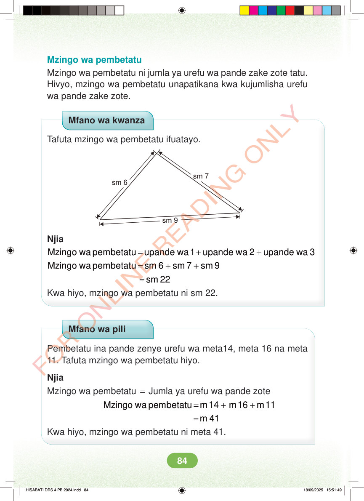

Mzingo wa pembetatu Mzingo wa pembetatu ni jumla ya urefu wa pande zake zote tatu. Hivyo, mzingo wa pembetatu unapatikana kwa kujumlisha urefu wa pande zake zote. Mfano wa kwanza Tafuta mzingo wa pembetatu ifuatayo. sm 7 sm 6 sm 9 Njia = + + Mzingo wa pembetatu upande wa 1 upande wa 2 upande wa 3 = + + Mzingo wa pembetatu sm 6 sm 7 sm 9 = sm 22 Kwa hiyo, mzingo wa pembetatu ni sm 22. Mfano wa pili Pembetatu ina pande zenye urefu wa meta14, meta 16 na meta 11. Tafuta mzingo wa pembetatu hiyo. Njia Mzingo wa pembetatu = Jumla ya urefu wa pande zote = + + Mzingo wa pembetatu m 14 m 16 m 11 =m 41 Kwa hiyo, mzingo wa pembetatu ni meta 41. HISABATI DRS 4 PB 2024.indd 84 HISABATI DRS 4 PB 2024.indd 84 18/09/2025 15:51:49 18/09/2025 15:51:49